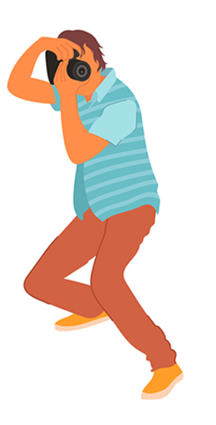

Jenis Photography


| Jenis | Definisi | Kegunaan | Peralatan |
|---|---|---|---|
| Fotografi Long Exposure (Pencahayaan Panjang) | Membiarkan rana kamera terbuka untuk jangka waktu yang lama (detik, menit, bahkan jam) untuk menangkap pergerakan atau cahaya dalam rentang waktu tersebut. | Menciptakan efek "sutra" pada air terjun atau ombak, Mengaburkan awan yang bergerak, Membuat jejak cahaya dari mobil yang bergerak di malam hari (light trails) | Tripod (mutlak!), filter Neutral Density (ND) untuk siang hari |
| Fotografi Bokeh | Efek estetika blur pada area di luar fokus (latar depan atau latar belakang) yang menghasilkan lingkaran-lingkaran cahaya lembut. Kata "bokeh" berasal dari bahasa Jepang yang berarti "kabur" atau "buram". | Menarik perhatian ke subjek utama dengan mengisolasi dari latar belakang yang mengganggu, menciptakan tampilan yang artistik dan profesional, terutama pada potret. | Lensa dengan aperture (bukaan) lebar (angka f/ kecil, misal f/1.8, f/2.8), jarak antara subjek dan latar belakang yang cukup jauh. |
| Fotografi Panning | Menggerakkan kamera secara horizontal (mengikuti gerakan subjek) saat mengambil foto dengan kecepatan rana yang relatif lambat. | Membuat subjek terlihat tajam dan bergerak, sementara latar belakang menjadi buram/garis-garis, menunjukkan kesan kecepatan atau gerakan | Lensa dengan stabilisasi gambar (tidak wajib tapi membantu), latihan dan timing yang tepat. |
| Fotografi Panning | Menggerakkan kamera secara horizontal (mengikuti gerakan subjek) saat mengambil foto dengan kecepatan rana yang relatif lambat. | Membuat subjek terlihat tajam dan bergerak, sementara latar belakang menjadi buram/garis-garis, menunjukkan kesan kecepatan atau gerakan. | Lensa dengan stabilisasi gambar (tidak wajib tapi membantu), latihan dan timing yang tepat. |
| Fotografi Macro | Memotret subjek dari jarak sangat dekat untuk menangkap detail ekstrem yang mungkin tidak terlihat dengan mata telanjang, seringkali dengan rasio perbesaran 1:1 atau lebih | Memotret serangga, bunga kecil, tetesan air, perhiasan, tekstur, atau objek kecil lainnya dengan detail yang menakjubkan | Lensa macro khusus, ring flash atau pencahayaan khusus macro, tripod (untuk stabilitas). |
| Fotografi HDR (High Dynamic Range) | Menggabungkan beberapa foto dengan eksposur berbeda (satu underexposed, satu normal, satu overexposed) menjadi satu gambar untuk menciptakan rentang dinamis yang lebih luas (detail di area terang dan gelap tetap terlihat). | Mengatasi perbedaan cahaya yang ekstrem dalam satu adegan (misal, pemandangan dengan langit yang sangat terang dan tanah yang gelap), sering digunakan pada fotografi lanskap dan arsitektur. | Tripod (untuk memastikan foto-foto sejajar), software editing (misal: Photoshop, Lightroom). |
| Fotografi Siluet | Memotret subjek dengan latar belakang yang jauh lebih terang, sehingga subjek muncul sebagai bentuk gelap tanpa detail internal. | Menekankan bentuk dan garis subjek, menciptakan misteri, drama, atau suasana hati tertentu. Sering digunakan saat matahari terbit atau terbenam. | Sumber cahaya di belakang subjek, fokus pada latar belakang terang, eksposur diatur untuk latar belakang. |
| Fotografi Low Key | Gaya pencahayaan yang didominasi oleh area gelap dan bayangan, dengan hanya sedikit cahaya untuk menonjolkan fitur-fitur tertentu. | Menciptakan suasana dramatis, misterius, atau melankolis. Sering digunakan untuk potret, fine art, atau benda-benda yang ingin ditekankan teksturnya. | Sumber cahaya tunggal atau terbatas, background gelap, reflector hitam (untuk mengurangi pantulan). |
| Fotografi High Key | Gaya pencahayaan yang didominasi oleh area terang dan cerah, dengan sedikit bayangan atau kontras yang rendah. | Menciptakan suasana ceria, ringan, murni, atau minimalis. Sering digunakan untuk potret bayi, produk, atau fashion | Pencahayaan yang merata dan terang, background putih atau terang. |
| Fotografi Abstract | Memfokuskan pada bentuk, warna, tekstur, dan garis, bukan pada representasi literal objek. Tujuannya adalah untuk membangkitkan emosi atau ide, bukan untuk menggambarkan kenyataan secara eksplisit. | Mendorong interpretasi penonton, menemukan keindahan dalam detail atau pola yang tidak biasa. | Lensa macro, telephoto (untuk mengisolasi detail), kreativitas, dan mata yang jeli. |
| Fotografi Street | Menangkap momen-momen spontan dan kehidupan sehari-hari di tempat umum, seringkali tanpa izin subjek. Fokus pada interaksi manusia, emosi, dan kondisi sosial. | Mendokumentasikan kehidupan kota, budaya, dan kondisi sosial manusia secara jujur dan tidak terduga. | Lensa prime serbaguna (misal 35mm atau 50mm), kamera ringkas yang tidak mencolok, kesabaran, dan kemampuan antisipasi. |